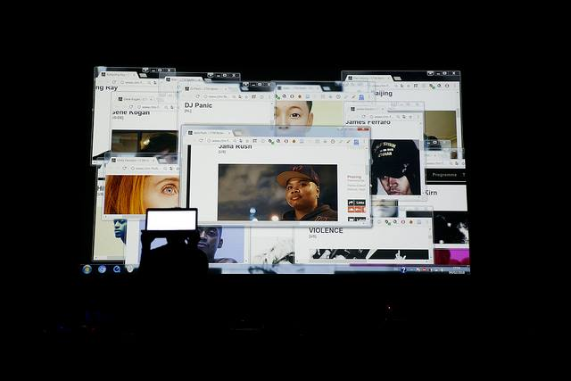

juliadelrioeria@gmail.com

Stefanie Kulisch
An audiovisual performance in collaboration with Claire Aoi and Elias Najarro for CTM Festival MusicMakersHacklab. The project aims at removing the creative element out of any human shell. A digestion of CTM heteroclite sonic archive vomits a distorted mash upof the past. Art creation as an altered archeology, unlocking fragmented magmatic post-human territories, seeping through the uncontrolled faulty soundscape. It will embrace its strangeness, its non-intentionality, its atonality, and assume this future as a recycled digital algorithmic version of the past.